Multi-task reinforcement learning trains one agent to solve many tasks at once, so that skills learned on one task can help the others. We study two benchmark families.
Background: from multi-task RL to our idea
1
Multi-task RL
One agent, many tasks
MiniGrid MT12: twelve puzzles, one policy
Same 7×7 partial view and actions for every task · reward only on success · very different goals
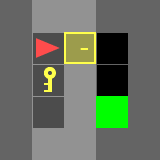
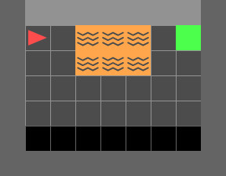
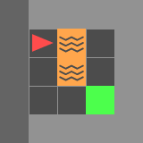
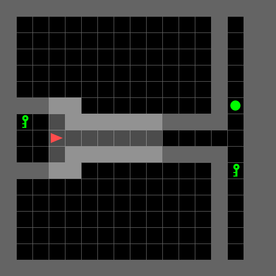
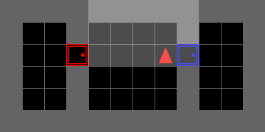
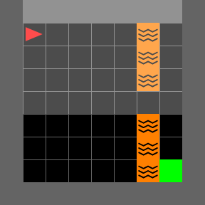
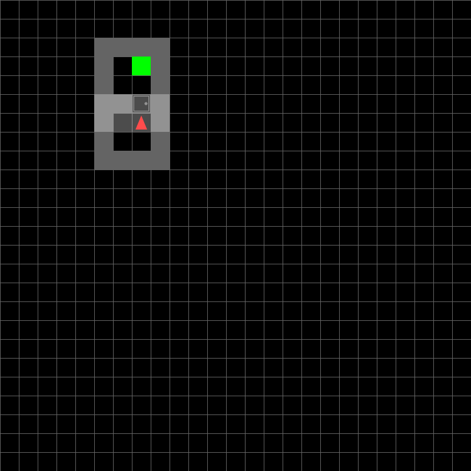
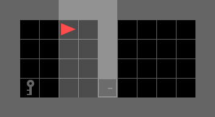
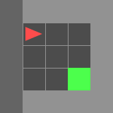
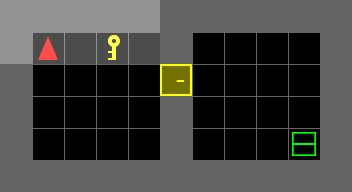
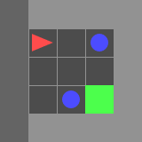
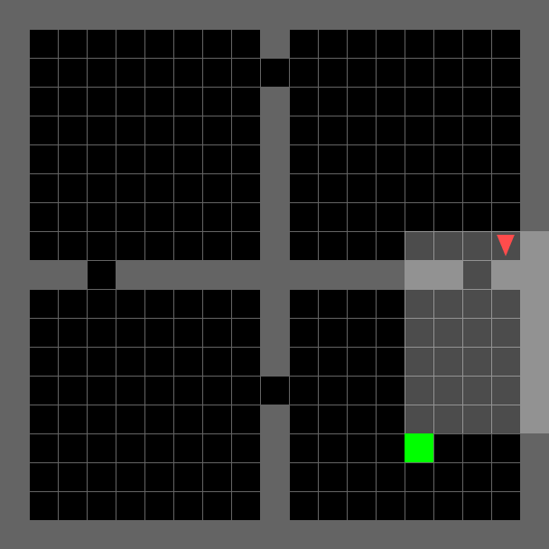
MetaWorld MT10 / MT50: one arm, many skills
One Sawyer arm, one 4-D continuous action space · 10 to 50 manipulation skills, some directly opposed

The MT10 tasks: reach, push, pick-place, door-open, drawer-open, drawer-close, button-press, peg-insert-side, window-open and window-close. Some pairs act on the same object with opposite motions (drawer-open vs. drawer-close, window-open vs. window-close).
2
Our setting · Multi-task federated RL
One task per agent, and no data leaves the agent
Server
sees model parameters only
Agent 1
Task: DoorKey
data stays here
Agent 2
Task: LavaGap
data stays here
Agent 3
Task: Memory
data stays here
Agent N
Task: DynObs
data stays here
Each agent explores its own environment; up and down the links go model parameters, never trajectories.
Conventional multi-task learning
Data from all tasks is pooled or shareable, so one learner sees every task.
Our setting: MT-FRL
- Each agent owns one task
- Trajectories never leave it
- Only parameters are exchanged
No agent ever sees another task, so knowledge can only travel through the model: how the server combines models decides whether sharing helps or hurts.
3
Problem 1 · How to treat the task head
Existing methods share the head all or nothing
The policy and value networks split into a representation backbone and a task head, the decision layer that turns features into actions and values. Everyone agrees on sharing the backbone. The question is what to do with the head.
Conventional FL (FedAvg)
Agent 1
DoorKey
DoorKey
no data
shared
shared
Agent 2
LavaGap
LavaGap
Representation backboneShared by all agents
Task headAlso averaged: shared by all
$\pi(a|s),\; Q(s,a)$ — same decision layer for both tasks
Average the whole network, head included. Picking up a key and avoiding lava end up with one decision layer, even though they need very different actions.
Head: fully shared → negative transferPersonalized FL (PFEDRL-REP, FedBABU)
Agent 1
DoorKey
DoorKey
no data
shared
shared
Agent 2
LavaGap
LavaGap
Representation backboneShared by all agents
Task head 1Agent 1 only
never
shared
shared
Task head 2Agent 2 only
$\pi_1, Q_1$ | $\pi_2, Q_2$ — heads never learn from each other
Average only the backbone; every agent keeps its own head. Decisions never mix across tasks, but related tasks cannot help each other at the decision level either.
Head: fully local → no transfer
4
Problem 2 · Whom to share with
Tasks pull the head in different directions
Think of each agent's head update as an arrow: the direction its own task wants the head to move. Related tasks point in similar directions; unrelated ones do not.
Average all heads into one
global average
The single average is short and points nowhere in particular: it is far from every task.
One prototype per group (ours)
Group A Group B Group C
Each prototype points the same way as its own members, so mixing it in actually helps.
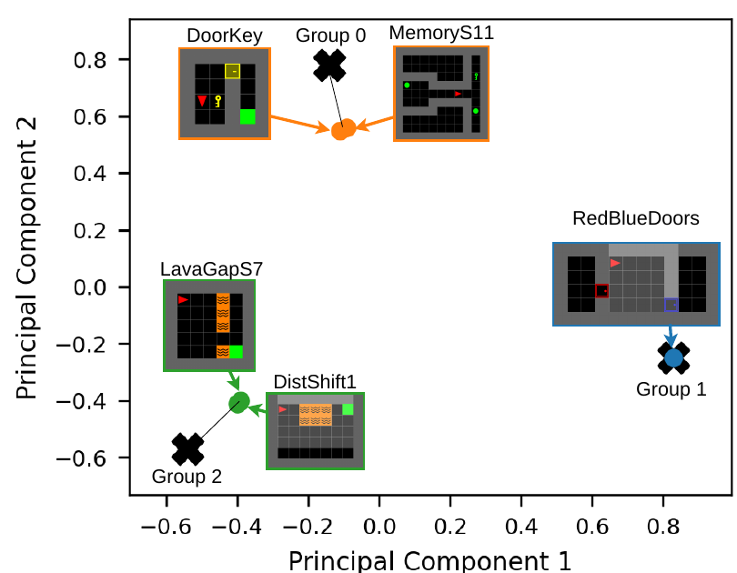
Evidence: real update directions do form groups
This is not just a cartoon. Each tile is one MiniGrid MT5 task, placed by the direction of its head updates recorded during warm-up (2-D PCA). Black crosses are the group centers the server finds with spherical K-means; each task joins the closest one.
Three groups emerge: DoorKey + Memory, RedBlueDoors alone, and the two lava tasks LavaGap + DistShift.
5
Two problems, one idea
Share the head with the right partners, and only as much as it helps
Each agent picks its own point between the two extremes, mixing its local head with its own group's prototype:
α = 0 · fully local (personalized FL)
α = 1 · fully shared (conventional FL)
Problem 1 · How much to share?
Each agent sets its own mixing weight α every round, guided by a closed-form optimum.
Problem 2 · With whom to share?
Group agents whose head updates point the same way; each group keeps one head prototype.